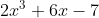
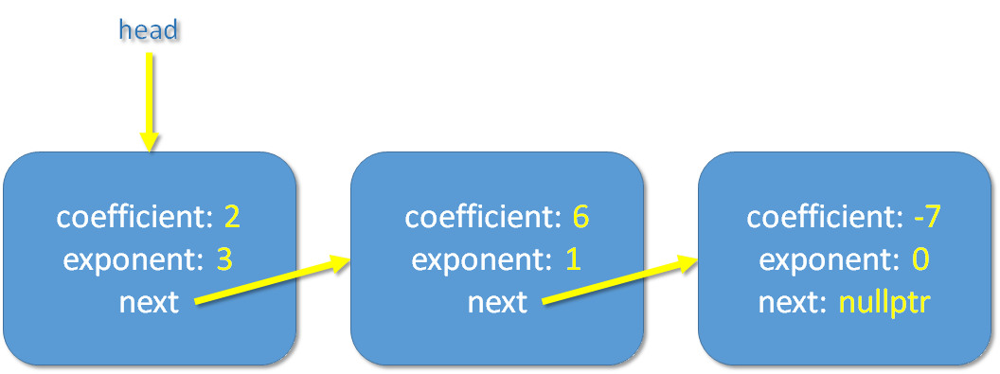

In this assignment, you will implement the Polynomial class which can store a single-variable polynomial with a linked list. Simple operations such as addition and multiplication will be supported. Through the implementation of it, you will have practices on various C++/OOP fundamentals, e.g., classes, objects, constructors, copy constructors, pointers, linked lists, etc.
A polynomial is an expression consisting of variables (also called interderminates) and coefficients. If you want to read about its full formal definition, you may read the wikipedia but it is not required at all for this assignment.
For this assignment, we are only concerned with single-variable polynomials such as this:
Throughout the assignment, we will use a very specific string to represent a polynomial. For example, the polynomial above will be represented precisely by "2*x^3 + 6*x - 7" which have 3 terms separated by exactly 1 space (and there is no extra space at the beginning, the end, or anywhere else)
For your information, while the "^" symbol is used to denote "to the power of" in our string representation, it actually has a different meaning in C++ code (bitwise XOR operator). There is no "to the power of" operator in C++.
To learn about the terminology we use, let's look at this example: "2*x^3 + 6*x - 7".
We will be using a linked list to store the polynomial. The struct we use is defined within the Polynomial class in polynomial.h as follows:
struct Term
{
int coefficient;
int exponent;
Term* next;
} * head; //linked list of terms, nodes are always sorted by exponents from the largest exponent to the smallest
It has the following properties:
head should point to nullptr when the polynomial is simply zero "0" (instead of having 1 term of exponent 0 and coefficient 0).We also assume the following for this assignment:
head points to nullptr), we print "0" even though the linked list has nothing in it.To illustrate, the linked list for the example polynomial "2*x^3 + 6*x - 7" looks like this:
Furthermore, for printing, coefficient 1 or -1 shouldn't be printed unless the exponent of the term is 0. (e.g. "-x" instead of "-1*x") Also, if the first term has a negative coefficient, there should be no space between the negative sign and the coefficient (e.g. "-x" instead of "- x") [clarified on March 5th, see FAQ and sample test cases for more examples]
With all the specifications above, there will only be one unique linked list and string representation for any polynomial.
Read the FAQ page for some common clarifications. You should check that a day before the deadline to make sure you don't miss any clarification, even if you have already submitted your work then.
If you need further clarifications of the requirements, please feel free to post on the Piazza (via Canvas) with the pa1 tag. However, to avoid cluttering the forum with repeated/trivial questions, please do read all the given code, webpage description, sample output, and latest FAQ (refresh this page regularly) carefully before posting your questions. Also, please be reminded that we won't debug for any student's assignment for the sake of fairness.
Submission details are in the Submission and Deadline section.
Please note that you should only submit the polynomial.cpp file. While you may modify other files to add your own test cases, you should make sure your submitted polynomial.cpp can compile with the original main.cpp and polynomial.h on ZINC.
If you use VS Code, you may follow the creating a project and using the terminal for custom compilation command section on our VS Code usage tutorial. That is, create a folder to hold all the extracted files in your file explorer, then open this folder in VS Code. You can then use the terminal command g++ -std=c++11 -o programName *.cpp to compile all sources in the folder to the program. You are also welcome to create a Makefile for it yourself. After the compilation, you can then use the command ./programName OR .\programName (depends on the OS/shell you use) to run the program.
A Polynomial object represents a single-variable polynomial as specified in the introduction section. It supports various simple operations such as addition and multiplication which are usable via member functions that will be implemented by you. You should also read the main.cpp and sample output for test cases of the member functions to help yourself understand what exactly each of them does.
For simplicity, you can assume all input parameters are valid.
You may refer to the polynomial.h while you read this section.
Data member
Term* headIt points to the head node of the linked list that stores the polynomial. Please read the introduction section for a detailed description of the linked list.
Polynomial()This is the default constructor. Simply set head to nullptr which represents the zero polynomial "0" as described earlier.
Polynomial(const Polynomial& another)This is the deep copy constructor. Since a deep copy should be performed, it should dynamically allocate space for the new nodes in the new linked list (i.e., do not reuse any existing node from another.)
Polynomial(int array[], int arraySize);This is the constructor that constructs the polynomial using the given array of the given size. The array lists all coefficients (including zeros which you should ignore) from the exponent (arraySize - 1) to exponent 0.
You can assume the arraySize will not be smaller than 1.
array is {5, -6, 7} with arraySize 3. A polynomial "5*x^2 - 6*x + 7" will be constructed.array is {11, 0, 7, 2} with arraySize 4. A polynomial "11*x^3 + 7*x + 2" will be constructed.array is {2} with arraySize 1. A polynomial "2" will be constructed.More examples can be found in the given test cases.
Polynomial(int n)This is a constructor that constructs a pre-made polynomial for some of the test cases. It is provided mainly to test the student's code without relying on the correctness of their constructors. Its code is given in the header file and already complete. Read the code to understand what it does.
Examples:n is 1, a polynomial "4*x^3 + x^2 + 5" will be constructed.n is 2, a polynomial "4*x^3 + 2*x^2 + 5" will be constructed.~Polynomial()This is the destructor. Remember to deallocate the linked list.
void print() constIt prints the unique string representation of the polynomial according to our description with cout. Please refer to the many examples in the given test cases (read the main.cpp for the test case code, read the polynomial.h for the pre-defined polynomials used, and refer to the sample output that is given here).
Tip: please spend more time to make sure it works well for all scenarios as we rely on this to grade your other functions.
Polynomial add(const Polynomial& another) constAdd this polynomial with another and return the result. Refer to the given test cases for examples. You may also refer to this page for steps needed to add polynomials in case you have forgotten your basic algebra class. The page has several examples for single-variable polynomials if you scroll down a little bit.
Polynomial subtract(const Polynomial& another) constSubtract another polynomial from this polynomial and return the result. Refer to the given test cases for examples. You may also refer to this page for steps needed to subtract polynomials.
Polynomial multiply(const Polynomial& another) constMultiply this polynomial with another and return the result. Refer to the given test cases for examples. You may also refer to this page for steps needed to multiply polynomials.
int evaluate(int valueOfX) constCalculate the value of the polynomial when the variable "x" has the specified value of x. Refer to the given test cases for examples.
int compare(const Polynomial& another) constReturn 1 if this polynomial is larger than another, or return -1 if this polynomial is smaller, or return 0 if both are the same. The polynomial comparison for two polynomials p1 and p2 is defined as follows:
Refer to the given test cases for examples.
The following constructor is optional and will NOT be graded. It is not even given in the header file. If you want to have extra practices, you can add this constructor yourself after you have finished and submitted your assignment.
Polynomial(const char s[])This constructs the polynomial according to the given C-string that stores the string representation of the polynomial. Since this task is optional and will NOT be graded, you are free to use anything you want. Please do NOT include this in your solution submitted for assignment 1.
Your finished program should produce the same output as our sample output for all given test cases. User input, if any, is omitted in the files. Please note that sample output, naturally, does not show all possible cases. It is part of the assessment for you to design your own test cases to test your program. Be reminded to remove any debugging message that you might have added before submitting your code.
There are 22 given test cases of which the code can be found in the given main function. These 22 test cases are first run without any memory leak checking (they are numbered #1 - #22 on ZINC). Then, the same 22 test cases will be run again, in the same order, with memory leak checking (those will be numbered #23 - #44 on ZINC). For example, test case #30 on ZINC is actually the given test case 8 (in the given main function) run with memory leak checking.
Each of the test cases run without memory leak checking (i.e., #1 - #22 on ZINC) is worth 1 mark. The second run of each test case with memory leak checking (i.e., #23 - #44 on ZINC) is worth 0.25 mark. The maximum score you can get on ZINC, before the deadline, will therefore be 22*(1+0.25) = 27.5.
About memory leak and other potential errorsMemory leak checking is done via the -fsanitize=address,leak,undefined option (related documentation here) of a recent g++ compiler on Linux (it won't work on Windows for the versions we have tested). Check the "Errors" tab (next to "Your Output" tab in the test case details popup) for errors such as memory leak. Other errors/bugs such as out-of-bounds, use-after-free bugs, and some undefined-behavior-related bugs may also be detected. You will get 0 mark for the test case if there is any error there. Note that if your program has no errors detected by the sanitizers, then the "Errors" tab may not appear. If you wish to check for memory leak yourself using the same options, you may follow our Checking for memory leak yourself guide.
We will have 26 additional test cases which won't be revealed to you before the deadline. Together with the 22 given test cases, there will then be 48 test cases used to give you the final assignment grade. All 48 test cases will be run two times as well: once without memory leak checking and once with memory leak checking. The assignment total will therefore be 48*(1+0.25) = 60. Details will be provided in the marking scheme which will be released after the deadline.
Here is a summary of the test cases for your information.
| Main thing to test | Number of test cases in main before deadline (given test cases) | Number of test cases in main after deadline (given+hidden test cases) |
|---|---|---|
| 3 | 4 | |
| default constructor | 1 | 1 |
| deep copy | 1 | 3 |
| array constructor | 3 | 7 |
| add | 3 | 7 |
| subtract | 3 | 7 |
| multiply | 3 | 9 |
| evaluate | 2 | 4 |
| compare | 3 | 6 |
Deadline: 23:59:00 on Mar 20, 2022 (Sunday)
Please submit one cpp file only: polynomial.cpp. Submit the file to ZINC. ZINC usage instructions can be found here.
Notes:
It is required that your submissions can be compiled and run successfully in our online auto-grader ZINC. If we cannot even compile your work, it won't be graded. Therefore, for parts that you cannot finish, just put in dummy implementation so that your whole program can be compiled for ZINC to grade the other parts that you have done. Empty implementations can be like:
int SomeClass::SomeFunctionICannotFinishRightNow()
{
return 0;
}
void SomeClass::SomeFunctionICannotFinishRightNowButIWantOtherPartsGraded()
{
}
There will be a penalty of -1 point (out of a maximum 100 points) for every minute you are late. For instance, since the deadline of the assignment is 23:59:00 on Mar 20th, if you submit your solution at 1:00:00 on Mar 21st, there will be a penalty of -61 points for your assignment. However, the lowest grade you may get from an assignment is zero: any negative score after the deduction due to a late penalty (and any other penalties) will be reset to zero.
Q: My code doesn't work / there is an error, here is the code, can you help me fix it?
A: As the assignment is a major course assessment, to be fair, you are supposed to work on it on your own and we should not finish the tasks for you. We might provide some very general hints to you, but we shall not fix the problem or debug for you.
Q: Can I add extra helper functions?
A: You may do so in the files that you are allowed to modify and submit. That implies you cannot add new member functions to any given class.
Q: Can I include additional libraries?
A: No. Everything you need is already included - there is no need for you to add any include statement (under our official environment).
Q: Can I use global variable or static variable such as "static int x"?
A: No.
Q: Can I use "auto"?
A: No.
Q: Can I use function X or class Y in this assignment?
A: In general if it is not forbidden in the description and the previous FAQs, and you can use it without including any additional library on ZINC, then you can use it. We suggest quickly testing it on ZINC (to see if a basic usage of it compiles there) before committing to using it as library inclusion requirement may differ on different environments.
Q: My program gives the correct output on my computer, but it gives a different one on ZINC. What may be the cause?
A: Usually inconsistent strange result (on different machines/platforms, or even different runs on the same machine) is due to relying on uninitialized hence garbage values, missing return statements, accessing out-of-bound array elements, improper use of dynamic memory, or relying on library functions that might be implemented differently on different platforms (such as pow() in cmath).
You may find a list of common causes and tips on debugging in the notes here.
In this particular PA, it is probably related to misuse of dynamic memory. Good luck with bug hunting!
Q: For the print function, should coefficient 1 or -1 be printed? That is, should it be "-1*x" or "-x" for a term with coefficient -1 and exponent 1?
A: No, as you can see in the sample output (test case #3). "-x" should be printed. However, if the exponent is 0, then the term should be printed, e.g. "1", "-1", "x^2 + 1", "x^2 - 1", etc.
Q: For the print function, if the first term has a negative coefficient, should we be adding a space between the negative sign and the coefficient? That is, should it be "- 90*x^2" or "-90*x^2"? Should it be "- x" or "-x"?
A: No, as you can see in the sample output (test case #3). "-90*x^2" and "-x" should be printed.
Q: For the first example of the array constructor, should the result be "5*x^2 - 6*x + 7" since the exponent 1 shouldn't be printed?
A: Yes, the result should be "5*x^2 - 6*x + 7". Sorry for the typo, exponent 1 shouldn't be printed indeed. It has been fixed on March 6th 5:34pm.
Q: Are "x" or "x - 5" larger?
A: "x - 5" is larger according to our description which states that when we reach a term in p1 but not in p2, p1 is considered as larger. Note that polynomial "x" must be represented by a linked list of 1 node/term (0s are never stored), so "x - 5" having the very same first term and an additional second term is considered as larger.
(Fixed a typo in this FAQ at 9:19am Mar 16, bolded: "x - 5" is definitely larger.)
Q: Will we be asked to print or operator on a polynomial with some nodes/terms that have 0 coefficients?
A: You can assume the polynomials given by us are always valid in all test case, meaning they follow the specifications we stated including “nodes/terms with 0 coefficient will NOT be stored.”.
Q: Can one of the operands be "0"? What is the result of multiplication with "0"?
A: Yes, in that case, the polynomial will have its head point to nullptr as we described. An empty linked list represents a valid polynomial "0" which can be printed as described. The result of multiplication with "0" (which is represented by a polynomial with an empty linked list) is "0" (which is represented by a polynomial with an empty linked list).